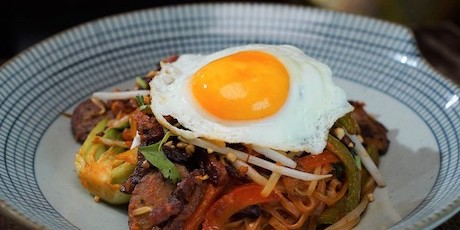

The Bacon, Sausage and Egg Tomato Pad Thai

Turns out Pad Thai’s even better for brunch! This all-star recipe features smoked bacon, pork sausages and Vietnamese rice noodles, crowned with a sunny-side up egg. You may never look at brunch the same way again.
DIRECTIONS FOR: THE BACON, SAUSAGE AND EGG TOMATO PAD THAI
INGREDIENTS
Tomato Curry Sauce
- 2 ginger, slices
- 2 galangal, slices
- 1 lemongrass, stalk (white part only)
- 2 cloves garlic
- 1 Thai chili
- 3 tomatoes, crushed
- 200 mL coconut milk
- 2 tsp (10 mL) brown sugar
- Sea salt
- 4 leaves Thai basil
The Bacon, Sausage & Egg Tomato Pad Thai Assembly
- ¼ onion, cut into strips
- ⅓ carrot, cut into strips
- Green and red peppers, desired amount
- 2 strips Cherry wood smoked bacon
- 2 pork sausages, pieces
- ½ 16-oz (500 mL) bag Vietnamese rice noodles
- Tomato curry sauce, reserved
- 4 baby bok choy, pieces, cut into halves
- 2 handfuls Bean sprouts
- 2 eggs
- Salt and pepper, to taste
- 1 Tbsp (15 mL) peanuts, roasted & chopped
- 1 Tbsp (15 mL) cilantro, chopped
DIRECTIONS
Tomato Curry Sauce
- In a food processor chop ginger, galangal, lemongrass, garlic and Thai chilli.
- Add processed garlic, Thai chilli, ginger, galangal and lemongrass to a wok and cook at medium heat for approximately 1 minute or until fragrant.
- Add crushed tomatoes and bring mixture to a gentle boil. Reduce heat and let simmer for roughly 15 minutes.
- Add coconut milk and stir until it’s well incorporated. Add brown sugar and sea salt to taste. Remove from heat then sprinkle with Thai basil.
The Bacon, Sausage & Egg Tomato Pad Thai Assembly
- Over medium high heat, cook onions, carrots and bell pepper for about 1 minute.
- Add bacon and sausages and cook for 2 minutes.
- Soak Vietnamese rice noodles for roughly 15 minutes, then add to the pan mixture and cook for another 2 minutes.
- Add the tomato curry sauce into the pan, stir and mix well.
- Add baby bok choy, bean sprouts and cook for another 2 minutes.
- Fry an egg in a separate pan, sunny-side up. Season with salt and pepper. Set aside.
- Once the vegetables are cooked and the noodles are softened, place Pad Thai into a serving dish.
- Sprinkle roasted chopped peanuts and fresh cilantro onto the Pad Thai. Finally, plate with the reserved sunny-side up egg on top of Pad Thai. Enjoy.
SOURCE AND CREDITS
Courtesy of Andy Yuen of Odd Couple
Return to main page